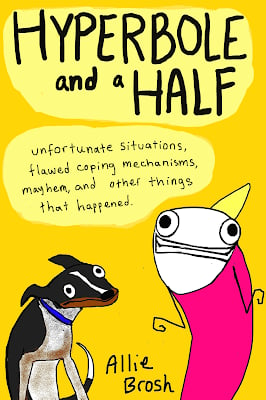

Galina:
Lemon meringue
Erik:
Pumpkin
Jake:
Apple
Morgan Strunsky
editorial production
associate
Mimi Li
editor
Go to Mimi’s pick

Go to Morgan’s pick


You know how a book can sit on the shelf for years, calling out “Read me, read me” when you pass by? Such was the case for the novel A Suitable Boy, a 1,500-page tour de force offering a view of post–World War II, post-Partition India. I finally picked it off the shelf and dove in. Much remains relevant today, and I recommend it for anyone with an interest in India. The BBC released a six-part version of the book that was broadcast in the United Kingdom over the summer; Netflix will begin streaming it around the world at the end of October, though unfortunately not in the United States.
Allan Gold
senior adviser
Go to Allan’s pick
Galina Velgach
editorial associate
Go to Galina’s pick
This Smithsonian Magazine article about African forest elephants is fascinating for two reasons. First, it highlights the delicate dance that is ecology. As the elephants plod through the forest, their trails form new habitats, open up freshwater sources for other species, and even help spread tree seeds. Without these noble creatures—who have been bullied into a fraction of their original habitat by poaching and deforestation—the forest’s ecology would be devastated.
Second, the article draws attention to the often-overlooked role that indigenous peoples play in local ecologies. In this particular instance, the BaAka, a community native to the Central African Republic, have a storied history with both the elephants and the trails that they create. Perhaps more than anyone, the BaAka deserve a voice in the discussion of elephant conservation and how best to foster the relationship between the human and natural worlds.
Sometimes your brain refuses to turn off. Mine has been running at full speed since the pandemic started, and I haven’t been able to easily “unwind with a good book” the way some of my coworkers have. Allie Brosh’s self-illustrated autobiography, Hyperbole and a Half, has been my saving grace. I used to bring a copy to coffee shops to entertain myself after work, and her hilarious sketches of childhood logic (like eating pepper to cancel out the taste of salt) would bring me to sobbing laughter—and probably prompted a few patrons to change seats. Now, as I commute from my desk to my couch, Hyperbole and a Half gives me a good chortle, and I can’t wait to read her follow-up.
I’ve recently made math a bigger part of my life, so of course I was drawn to this discussion with mathematician Francis Su about how math can help anyone cultivate personal virtues.

Our favorite pies:
Annie:
Sugar cream



Go to Rachels’s pick
Rachel Henry
editor
TV shows are often mindless, but every once and a while, a show’s story lines make me want to burst into the writers’ room and ask, “How did you do that?!” Fargo is one of those shows. I’m currently on Season 2 (Season 4 started on FX on September 27), and it’s so good. Each season has a new cast, new story line, and new time period, making the (great) storytelling all the more impressive.
A lot of the family dynamics are downright Shakespearean, especially in Season 2. And many of the characters use parables; while this may be annoying for some, I think it gives an extra layer of insight into how these people view the world, how it works, and their place in it. Plus, I like a little poetic flair every now and then. There's also a liberal dosage of dark comedy, which is my preferred kind of comedy.
The weather in Chicago has already turned. It snowed last week. And I’m feeling myself transition from the energy of the summer, when I want to go go go all day from one outdoor activity to the next, to the coziness and quietness of the cold months, when I let myself slow and hunker down. Reading is always a critical part of this time of year, and I’ve been working on some really great books lately—most notably, Educated and Notes From a Small Island. So have my coworkers. Scroll for our tips on what to read (and watch and eat) this month.